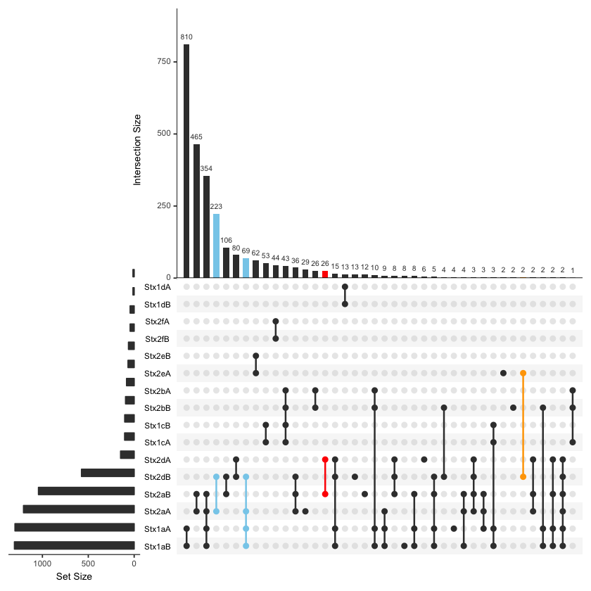
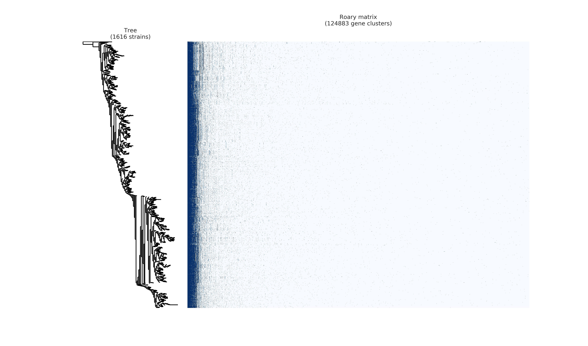
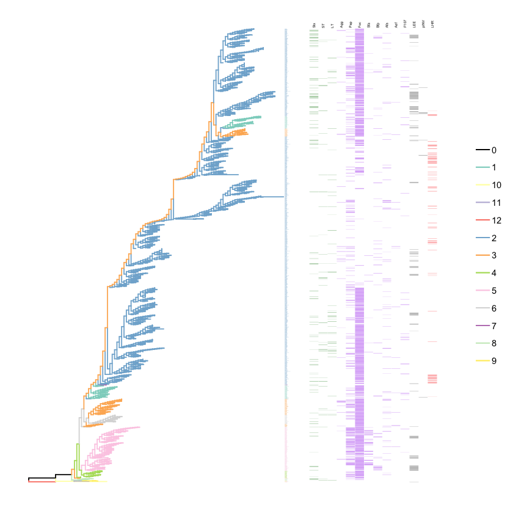
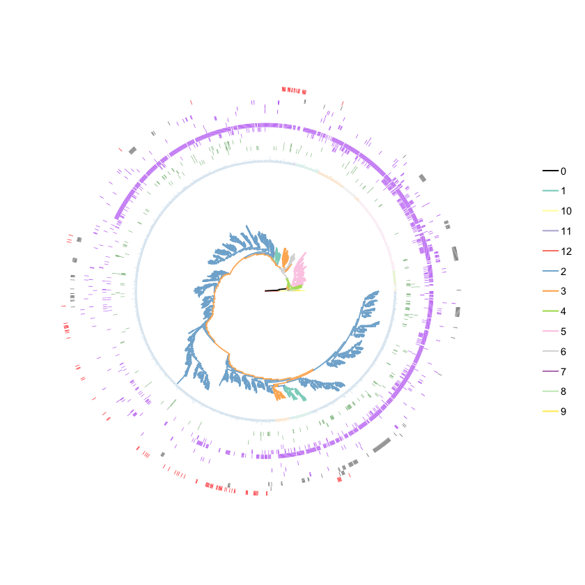

Project of Escherichia coli¶
Overview¶
Escherichia coli is a Gram-negative, rod-shaped bacterium belonging to the family Enterobacteriaceae that was described in 1885 by a German pediatrician. Pathogenic E.coli is versatile due to the diversity of their gene sets. Virulence factors usually located on a virulence plasmid and can be acquired through gene transfer.Different combination of virulence factors may caused to different illness among human and animals.
This time, we investigate the co-occurrance of virulence factors among all the available genome in the Genbank. Meanwhile, we use phylogenetic tree to investigate relationship between different O/H serotype.
Genome Download¶
Install Wget¶
On MacOs
ruby -e "$(curl -fsSL https://raw.githubusercontent.com/Homebrew/install/master/install)"
brew install wget
On Windows
Download wget
Download via accession number¶
According the assembly_summary_genbank in NCBI ftp site, we can get the genome through the organism name
import os
os.mkdir("Ecoli_genome")
os.chdir("Ecoli_genome")
with open(r'assembly_summary_genbank.txt') as f:
for i in f.read().split('\n')[2:-1]:
os.system('wget '+i+'_genomic.fna.gz')
or Use Pandas
import pandas as pd
f=pd.read_table("assembly_summary_genbank.txt",sep='\t',header=1)
for i in f[f['organism_name']=='Escherichia coli']['ftp_path']:
os.system('wget '+i+'_genomic.fna.gz')
Translate into amino acid sequence¶
Usually I only download fna file, and use Prodigal to translate nucleotide into amino acid sequence.
for i in os.listdir('.'):
order = 'prodigal -i '+i+' -q -a '+i'.faa'+' -d '+i+'.nucl'+' -o '+i+'.out'
print order
os.system(order)
Now we can get predicted protein sequence of all E.coli genomes.
Virulence Factors Detection¶
We use all protein sequence to run BLAST against a In-house collected gene set:
cat *.faa > Ecoli.faa
makeblastdb -in VF.faa -dbtype prot
blastp -query Ecoli.faa -db VF.faa -out VF.blast -outfmt 6 -evalue 1e-10 -num_threads 8 -num_alignments 1
Result Analysis¶
Now we get the file of Strain_Profile.csv
Data visualization¶
Use UpsetR:¶
# Show coexist between Agg subunit
library(UpSetR)
f=read.csv("Strain_Profile.csv")
upset(f,order.by="freq",sets=c('Agg3A','Agg3B','Agg3C','Agg3D','Agg4A','Agg4B','Agg4C','Agg4D','Agg5A','AggA','AggB','AggC','AggD'))
# Show co-exist between Stx toxin
upset(f,order.by="freq",sets=c("Stx2aB","Stx2aA","Stx2bA","Stx1aA","Stx1aB","Stx2dB","Stx2bB","Stx1cA","Stx1cB","Stx2dA","Stx1dB","Stx2fA","Stx2fB","Stx1dA"))

# Show co-exist between Bfp toxin
upset(f,order.by = "freq",sets=c("BfpA","BfpB","BfpC","BfpD","BfpE","BfpF","BfpG","BfpH","BfpI","BfpJ","BfpK","BfpL","BfpP","BfpU"))

Use NetworkX¶
# Show co-exist between Shiga toxin and [Simplified Adhesin Factors]
import matplotlib.pyplot as plt
import networkx as nx
def get_co_oc_from_show_vfs(show_vf):
cooc=[]
with open(r'adhesin_simplify.csv') as f:
data=f.read().split('\n')[:-1]
for i in data:
show_vf.append(i.split(',')[1])
for i in range(len(show_vf)):
for j in range(len(show_vf)):
if j>i:
con=0
for k in strain_profile:
if show_vf[i] in strain_profile[k] and show_vf[j] in strain_profile[k]:
con+=1
if con != 0:
cooc.append((show_vf[i],show_vf[j],con))
show_vf=['Stx1aA','Stx1cA','Stx1dA','Stx2aA','Stx2bA','Stx2dA','Stx2eA','Stx1aB','Stx1cB','Stx1dB','Stx2aB','Stx2bB','Stx2dB','Stx2eB']
get_co_oc_from_show_vfs(show_vf)
G.nodes()
G=nx.Graph()
G.add_weighted_edges_from(cooc)
weights =[]
weights= [w[2]['weight']*0.001 for w in G.edges(data=True)]
node_color=[]
for i in G.nodes():
if 'Stx' in i:
node_color.append('#CD3333')
else:
node_color.append('#B5B5B5')
pos=nx.circular_layout(G)
nx.draw(G, pos,node_size=200, width=weights,with_labels=True,font_size=5,node_color=node_color,edge_color=color,alpha=0.8)

Adhesin factors and heat stable toxin
Adhesin factors and heat labile toxin
All toxin

In Silico Serotyping¶
To understand the relationship between different serotype and their virulence profile, we use BLAST based in silico methods to serotype E.coli via SerotypeFinder.
cat *.faa > Ecoli.faa
makeblastdb -in serotype.faa -dbtype prot
blastp -query Ecoli.faa -db serotype.faa -out EcoliSerotype.blast -outfmt 6 -evalue 1e-10 -num_threads 8 -num_alignments 1
Result Statistics¶
- 10450 isolate with O antigen
- 11657 isolate with H antigen
- 10361 isolate with O&H antigen(including 1576 serotype)
- Use O&H antigen and only O antigen for phylogenetic analysis(totally 1616 isolate)
Use Assembly-stat to get assembly quality of each genome, and each serotype group select top genome completeness isolate to construct phylogeneitc tree. ## Phylogenetic Tree Construction
Use Prokka Annotate¶
Build local Database of Escherichia coli¶
Use all “Complete genome” level of genome completeness strain to construct database. Download gbk file same as Download via accession number (https://huifeng.readthedocs.io/en/latest/Ecoli.html#download-via-accession-number)
prokka-genbank_to_fasta_db *.gbk > ecoli.faa
cd-hit -i ecoli.faa -o ecoli -T 0 -M 0 -g 1 -s 0.8 -c 0.9
rm -fv ecoli.faa ecoli.bak.clstr ecoli.clstr
makeblastdb -dbtype prot -in ecoli
mv ecoli.p* /path/to/prokka/db/genus/
Run prokka¶
import os
for i in os.listdir('.'):
prokka = 'prokka --usegenus --genus ecoli --outdir ./prokka_out'+i.split('.')[0]+' --locustag '+i.split('.')[0]+' --prefix '+i.split('.')[0]+' --cpus 32 '+i
os.system(prokka)
Use Roary get single copy gene¶
roary -a # Check dependency
mkdir gff;mkdir ffn; mkdir faa
mv *.gff ./gff;mv *.ffn ./ffn; mv *.faa ./faa
cat ./ffn/*.ffn > ./ecoli.ffn
raory *.gff
# get single copy gene
import pandas as pd
f=pd.read_csv("gene_presence_absence.csv",low_memory=False)
f1=f[(f['No. isolates']==1616) & f['Avg sequences per isolate']==1.0]
strain_id=[i for i in f1.columns if 'GCA_' in i]
strains=f1[strain_id]
strain_list=strains.values.tolist()
id2seq={}
## Get a dict of id --> seq
with open(r'ecoli.ffn') as f:
data=f.read().split('>')[1:]
for i in data:
id2seq[i.split('\n')[0].split(' ')[0]]=i.split('\n',1)[1]
## write each family sequemces
for i in range(68):
of_name='family'+str(i)
of=open(of_name,'w')
for j in strain_list[i]:
of.write('>'+j+'\n'+d[j]+'\n')
of.close()
Use Muscle to align sequence
for i in family*
do
muscle -in $i -out $i+'_aligned.fasta'
done
Connect each alignment file:
import os
dicts={} ## Use strainID as key, add each sequence in to the value
for i in os.listdir('.'):
if '_aligned.fasta' in i:
with open(i,'r') as f:
data=f.read().split('>')[1:]
for j in data:
if j.split('\n',1)[0] not in dicts:
dicts[j.split('\n',1)[0]]=j.split('\n',1)[1]
else:
dicts[j.split('\n',1)[0]]+=j.split('\n',1)[1]
outfile=open('connected.faa','w')
for i in dicts:
outfile.write('>'+i+'\n'+dicts[i]+'\n')
outfile.close()
In this way, we can get connected.fna file of connected DNA sequence for Population Structure calculation
Model Select¶
Use ProtTest
java -jar prottest-3.4.2.jar -i connected.faa -S 2 -all-distributions -all -tc 0.5 > prottest.output
In this work, we get “JTT+I+G” model.
Calculate Population Structure¶
Use rhierbaps(R implementation of hierBAPS)
devtools::install_github("gtonkinhill/rhierbaps")
library(rhierbaps)
snp.matrix <- load_fasta(connected.fasta)
hb.results <- hierBAPS(snp.matrix, max.depth = 2, n.pops = 12, quiet = TRUE)
write.csv("BAPS.csv",hb.results$partition.df)
Tree Visualization¶
Visualize Tree with Pan-genome Profile( Use Roary script)¶
python roary_plots.py fast.tree gene_presence_absence.csv

Visualize Tree with ggtree¶
library(ggtree)
library(ggplot2)
cluster=read.csv("BAPS_reid.csv")
info<-read.csv("label2.csv")
heatmapData<-read.csv("show_vf_profile.csv",row.names=2)
heatmapData=heatmapData[2:12]
rn <- rownames(heatmapData)
heatmapData <- as.data.frame(sapply(heatmapData, as.character))
rownames(heatmapData) <- rn
f<-read.tree("Out_root.nwk.txt")
group=split(cluster$isolate,cluster$group_level_1)
f <- groupOTU(f, group)
p<-ggtree(f,aes(color=group)) %<+% info +
geom_tiplab(aes(label=Serotype),align=T, linetype=NA,size=0.8)+theme(legend.position = "right")+scale_color_manual(values=c('black','#8DD3C7','#FFFFB3','#BEBADA','#FB8072','#80B1D3','#FDB462','#B3DE69','#FCCDE5', '#D9D9D9' ,'#BC80BD', '#CCEBC5', '#FFED6F'))
p3<-gheatmap(p,heatmapData,offset=0.001,colnames_position="top",
colnames_angle=90,color=NULL,
colnames_offset_y = 1,hjust=-0.1,
font.size=1.2)+
scale_fill_manual(values = c("white","Red"),breaks=c("0","1"))
 
Get PDF
Shigella Piasmid Mxi-Spa identifed if MxiM or Spa33 existed.